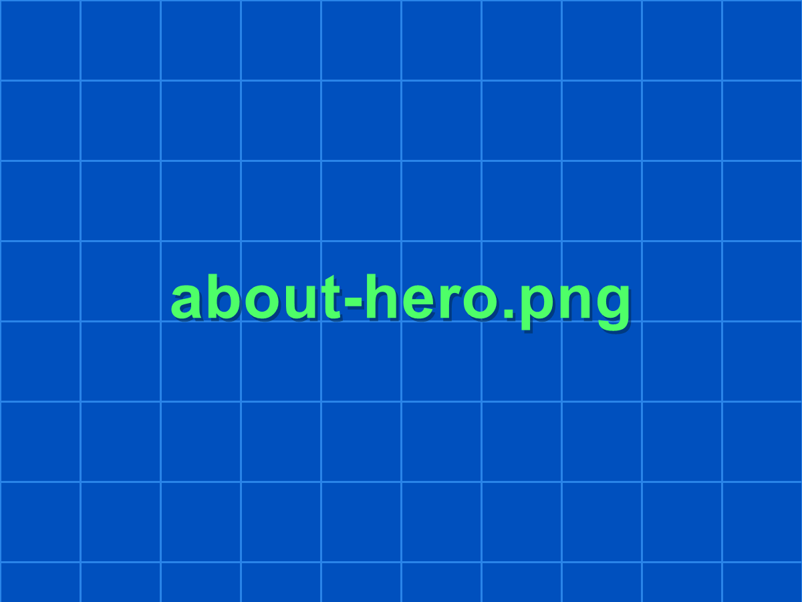

A productization-oriented engineering team for underwater robotics platforms and mission support.
一支具备产品化能力的水下机器人平台与任务支持工程团队。
About Squadot Tec.
关于 Squadot Tec.
Squadot Tec. is an engineering team focused on underwater observation, structural inspection, confined access, shallow-water review and payload-oriented integration.
Squadot Tec. 是一支面向水下观测、结构巡检、受限空间进入、浅水复核与挂载集成的工程团队。
Read the team through platform engineering, sensing, control and delivery execution.
从平台工程、感知、控制与交付执行四个维度理解团队能力。

Identity
身份定位
A productization-oriented engineering team for underwater robotics platforms and mission support.
一支具备产品化能力的水下机器人平台与任务支持工程团队。
Micro to medium platforms, field support, rental, purchase and payload-oriented project expansion.
微型到中型平台、现场支持、租赁、采购与项目化挂载增配。
Dams, hydraulic structures, nearshore assets, ponds, shafts, culverts and constrained industrial water spaces.
坝体、水工结构、近岸设施、池体、井室、涵洞和狭窄工业水下空间。
Start from a standard platform, then expand by payload, support frame and delivery model as needed.
先从标准平台进入，再围绕挂载、支架和交付方式进行按需扩展。
Team Background
团队背景
The team background spans acoustics, underwater robotics, navigation, SLAM and underwater system design.
团队背景覆盖声学、水下机器人、导航、SLAM 与水下系统设计方向。
The capability picture includes ROV/AUV structure design, watertight components, control systems and field-side deployment logic.
能力图谱涵盖 ROV/AUV 结构设计、水密部件、控制系统与现场部署逻辑。
Work covers sonar SLAM, path planning, image enhancement and multi-sensor fusion.
能力覆盖声呐 SLAM、路径规划、图像增强与多传感器融合。
Software, integration, dashboard, monitoring and field-oriented execution all belong to the current capability picture.
软件、系统集成、地面站监控与面向现场的执行支持都属于当前团队能力的一部分。
Company Approach
工作方式
Choose the closest standard platform by depth, space and motion requirement.
先按水深、空间与运动要求选择最接近的标准平台。
Add sensing, lighting, sampling or support-frame logic only where the task actually needs it.
仅在任务真正需要时再增加感知、照明、取样或支架逻辑。
Align purchase, rental or mission support mode to the actual project cycle.
再根据项目周期决定采购、租赁还是任务支持模式。
Start from site condition, delivery mode and module expectation, then we can define the right team path.
请先说明现场条件、交付方式和模块预期，再确定最合适的沟通路径。